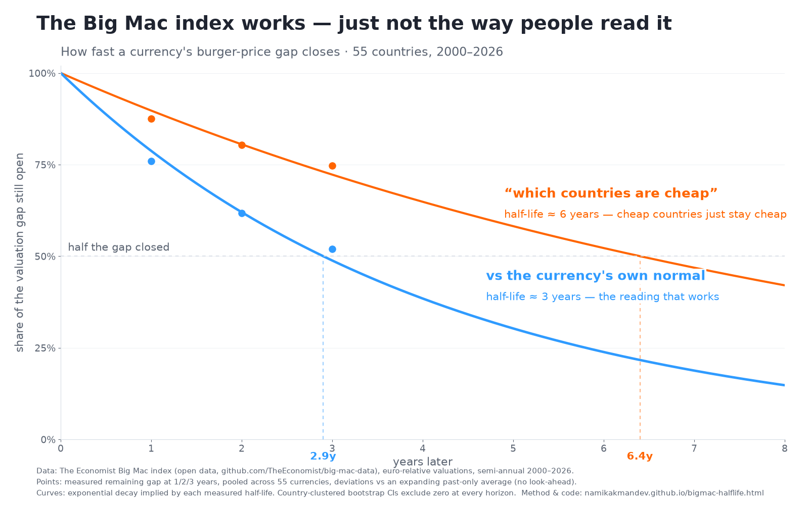

The Big Mac index, tested
In 1986 The Economist invented the Big Mac index as a joke about purchasing-power parity. This page tests it against The Economist's own open data — 55 countries, every semi-annual reading from 2000 to July 2026 — and publishes every number, the method, its limitations, and a script that reproduces the whole thing deterministically. The verdict: the index works, with a statistically significant half-life of about 3 years — just not the way most people read it.

How much of a valuation gap is still open after t years. Points are measured
remaining fractions at 1, 2 and 3 years, pooled across 55 currencies; curves are the
exponential decay implied by each measured half-life. Regenerate with
python3 scripts/bigmac_chart.py.
The joke index works
When a currency's burger price drifts away from its own historical normal, the gap closes reliably: about half of it disappears within ~3 years, and the country-clustered confidence interval excludes zero at every horizon tested. That is the same 3–5-year half-life the academic literature finds for purchasing-power parity using far more sophisticated price data. A hamburger reproduces the peer-reviewed number.
…but not the way people read it
The popular reading — “burgers are cheap in country X, so its currency must rise” — is much weaker. Raw cross-country gaps have a half-life of 6+ years, because a large part of each gap is permanent: poorer countries are structurally cheaper (the Penn effect). The index tells you where a currency stands versus its own history, not which countries are bargains.
The confession
The first run of this analysis said the gap closes in about 1 year — suspiciously good. The cause was look-ahead bias: each currency's “normal” was defined using its full history, including the future. With an expanding window that lets each date see only its own past, the honest answer is 3 years, not 1. That biased row is kept in the table below on purpose.
The numbers
Pooled panel regression: the change in a currency's valuation gap over the next k years, regressed on the current gap. A slope of −1 would mean the gap fully closes within the horizon; 0 would mean it never closes. All rows below are the verbatim output of scripts/bigmac_reversion.py (fixed seed, deterministic).
| Specification | Horizon | Slope | 95% cluster CI | R² | n | Half-life |
|---|---|---|---|---|---|---|
| Headline: vs own past-only normal (EUR base) | 2y | −0.382 | [−0.579, −0.179] | 13% | 1461 | ≈ 2.9y |
| Raw cross-country gap (the popular reading) | 2y | −0.196 | [−0.343, −0.117] | 11% | 1791 | ≈ 6.4y |
| Full-sample normal — look-ahead bias, kept as a warning | 2y | −0.701 | [−0.855, −0.539] | 38% | 1791 | ≈ 1.1y |
| Robustness: USD base instead of EUR | 2y | −0.378 | [−0.599, −0.156] | 14% | 1461 | ≈ 2.9y |
| Robustness: 2000–2012 only | 2y | −0.333 | [−0.510, −0.183] | — | 381 | ≈ 3.4y |
| Robustness: 2013–2026 only | 2y | −0.395 | [−0.672, −0.131] | — | 1080 | ≈ 2.8y |
| Robustness: 1-year horizon | 1y | −0.241 | [−0.343, −0.129] | 8% | — | ≈ 2.5y |
| Robustness: 3-year horizon | 3y | −0.481 | [−0.694, −0.249] | 18% | — | ≈ 3.2y |
| Robustness: extreme countries dropped | 2y | −0.382 | [−0.579, −0.179] | 13% | 1461 | ≈ 2.9y |
The headline slope maps to a half-life 95% CI of roughly 1.6 to 7 years — wide, because currencies are noisy, but excluding both “never” and “instantly”. The largest single deviations in the panel are Venezuela and Lebanon during currency crises; they revert as the model predicts, no observation exceeds a 100% deviation, and dropping the extremes changes nothing (last row).
Method
Valuation gaps are The Economist's euro-relative (and, as a check, dollar-relative) Big Mac valuations, semi-annual, 2000–July 2026. For each currency and date, the gap is measured as the deviation from that currency's expanding-window average using only past observations (minimum six readings of history, so each currency's first three years are used for calibration only — that is why n drops from 1791 to 1461 versus the raw specification). The regression pools all currency-episodes:
future k-year change in gap = a + b × current gap + error
with the half-life computed as (k · ln 0.5 / ln(1+b)) / 2 years for semi-annual data. Because the 1,461 episodes are not independent — each currency contributes many overlapping ones — confidence intervals come from a country-clustered bootstrap: whole countries are resampled with replacement, 2,000 iterations, fixed seed 42.
Limitations
- Pooled, not per-currency. The 3-year half-life is an average tendency across 55 currencies. It is not a claim about any single currency, and the spread around it is large (R² is 8–18% depending on horizon).
- Slow and noisy is not tradeable. A statistical drift with a multi-year half-life and an R² of 13% is a fact about how to read an indicator, not an FX strategy. Nothing here is investment advice.
- Overlapping episodes. Semi-annual data with multi-year horizons means adjacent episodes share most of their information; the clustered bootstrap is the defence, but the effective information is far less than n suggests.
- One burger. A single traded-plus-non-traded good is a crude price index; that the result still matches the broad-index PPP literature is the finding, not a reason to prefer burgers to price indices.
- Coarse time resolution. Two readings a year bounds how precisely any half-life can be located; the honest statement is “about 3 years, CI roughly 1.6–7”, not “2.9”.
Reproduce it
Everything is open: The Economist publishes the data, this site publishes the code, and the analysis is seeded, so every number above reproduces to the last decimal.
Analysis script (Python, stdlib+numpy) Chart script The Economist's open data Poke at the same data in the browser
The interactive link loads the July 2026 cross-section (rich vs emerging economies) into the Group & Category Check tool — the cross-sectional cousin of the time-series result above, with the effect size the p-value hides. Related: Big Mac Europe map and PPP in Europe.
Data © The Economist (Big Mac index, published as open data under their big-mac-data repository); this analysis is independent and not affiliated with or endorsed by The Economist. Method and any errors are mine. Written August 2026.